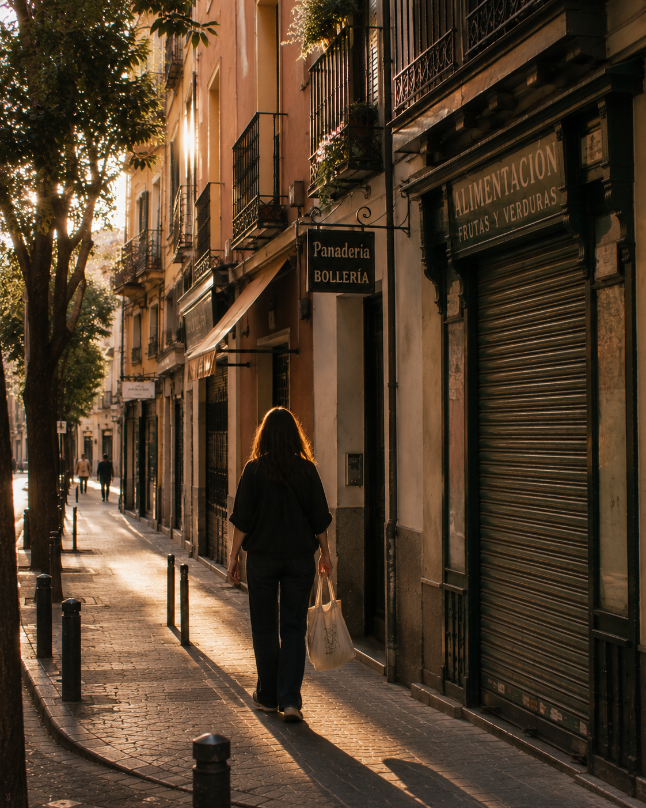
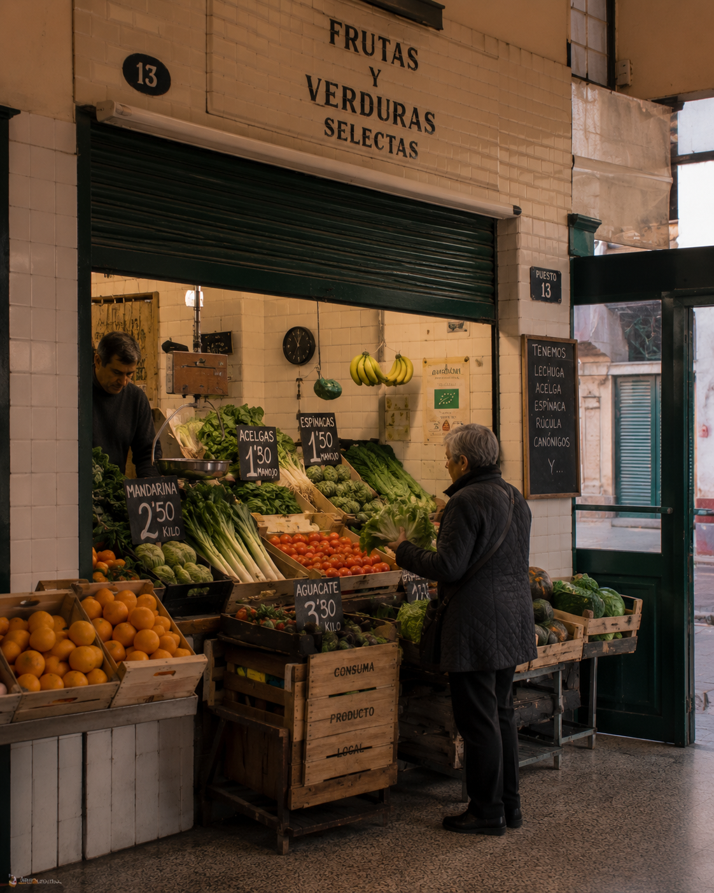
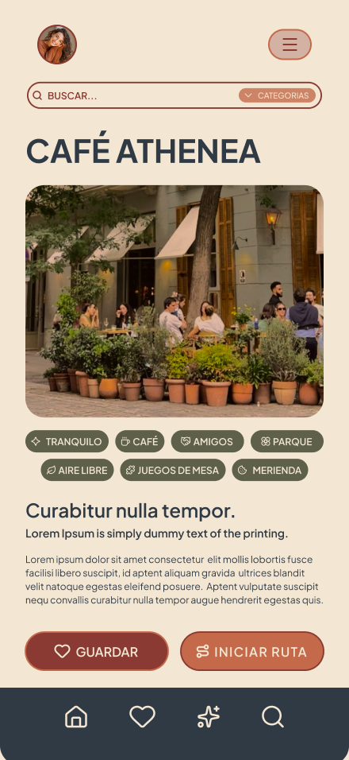
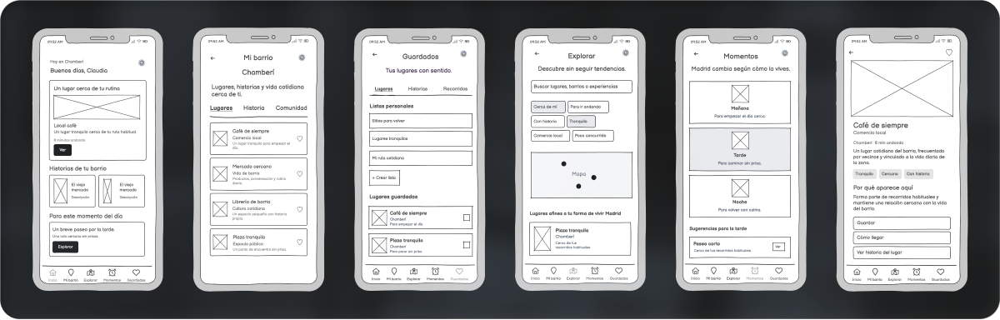
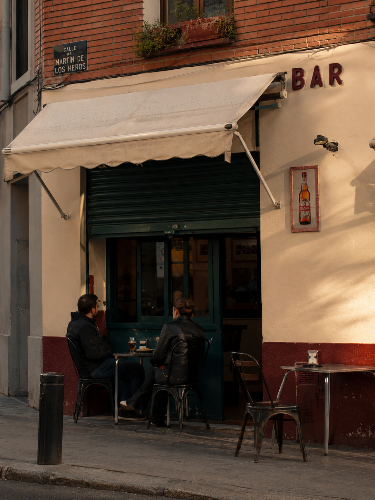
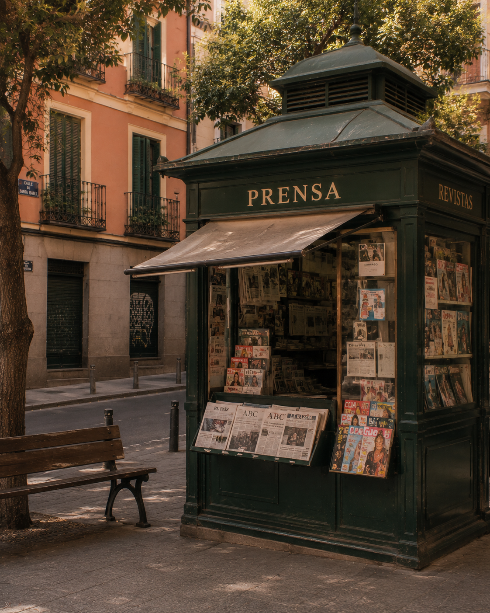

Saturación por popularidad
Los rankings generan un efecto acumulativo: cuanto más visible es un lugar, más se visita y más se satura. Los barrios pierden su identidad.
● App para residentes de Madrid
No como decorado.
Redescubre tu ciudad desde el barrio, la vida cotidiana y la afinidad. Sin rankings turísticos, sin viralidad, sin ruido.

● El problema
Las apps de recomendación actuales muestran Madrid desde lógicas turísticas, invisibilizando la vida cotidiana de quienes la habitan.

Los rankings generan un efecto acumulativo: cuanto más visible es un lugar, más se visita y más se satura. Los barrios pierden su identidad.
Los comercios locales y ubicaciones de barrio quedan sepultados bajo recomendaciones virales y rutas turísticas estándar.
Las plataformas reorganizan cómo se percibe, se recorre y se consume la ciudad, reduciendo su complejidad a consumo rápido.
Madrid Habitada existe para devolver al residente una relación más propia, próxima y cotidiana con la ciudad.

● La propuesta
Madrid Habitada ayuda a redescubrir la ciudad desde barrios, usos reales y experiencias no turistificadas.
Recomendaciones por barrio habitual, contexto de uso y afinidad personal. Sin rankings, sin modas.
Cada lugar explica su papel en la vida del barrio: qué hay, por qué encaja contigo y qué puedes hacer.
Mañana, tarde o noche. La app propone lugares según el momento con baja carga cognitiva.
Tu memoria personal de la ciudad. Sin rankings sociales ni obligación de publicar o compartir.
● Objetivo SMART
Validar con una muestra mínima de 40 usuarios residentes en Madrid si la experiencia de exploración permite que al menos el 60 % encuentre y guarde un lugar afín o inicie una ruta cotidiana en menos de 3 minutos, con valoración media mínima de 4/5 en claridad, utilidad y afinidad percibida.
semanas
Periodo de validación del prototipo.
minutos
Tiempo máximo para completar la acción.
valoración
Claridad, utilidad y afinidad percibida.
conversión
Guardar un lugar o iniciar una ruta.
usuarios
Muestra mínima de residentes.
● Para quién
Madrid Habitada se adapta a distintas relaciones con la ciudad, siempre desde la vida cotidiana y la proximidad.
Residente arraigada
36 años · Administrativa
Carabanchel
Necesita proteger sus rutinas y espacios de confianza frente a la masificación.
Residente largo plazo
42 años · Informático
Chamberí
Busca seguir descubriendo Madrid sin depender de rankings ni recomendaciones masivas.
Residente reciente
29 años · Diseñadora
Aluche
Necesita orientación para construir pertenencia de forma progresiva.
● Arquitectura de la información
El diseño no busca retener atención; busca resolver una consulta y devolver al usuario a la ciudad. La información se organiza en tres niveles.

● Embudo de conversión · RACE
Cada fase del producto está diseñada para reducir fricción y generar una relación real. El modelo RACE se interpreta como indicador de valor experiencial.
Base estratégica y definición de audiencia.
Atraer residentes, no turistas.
Exploración útil sin fricciones.
Guardar un lugar o iniciar una ruta.
Retorno y vínculo emocional.
● Empieza hoy
Únete a los primeros residentes que redescubren su ciudad desde la proximidad, sin ruido y sin rankings.
Sin publicidad · Sin rankings turísticos · Tecnología discreta
● Identidad visual
Fachadas, ladrillo, persianas, portales, mercados, bares, calles secundarias y comercio local. Criterio fotográfico documental, a nivel de calle, con luz natural.

Bar de barrio
Mercado de barrio

Kiosco de prensa
Fachadas, ladrillo, persianas, portales, mercados, bares, calles secundarias y comercio local.
Documental · nivel de calle · luz natural · escenas no monumentales.
Plus Jakarta Sans — Clara, funcional y amable.
Granate ladrillo
#8A3A32
Terracota suave
#C46A4A
Azul sombra
#2F3A45
Verde persiana
#5E6049
Crema fachada
#F3E6D3
Gris piedra
#323232